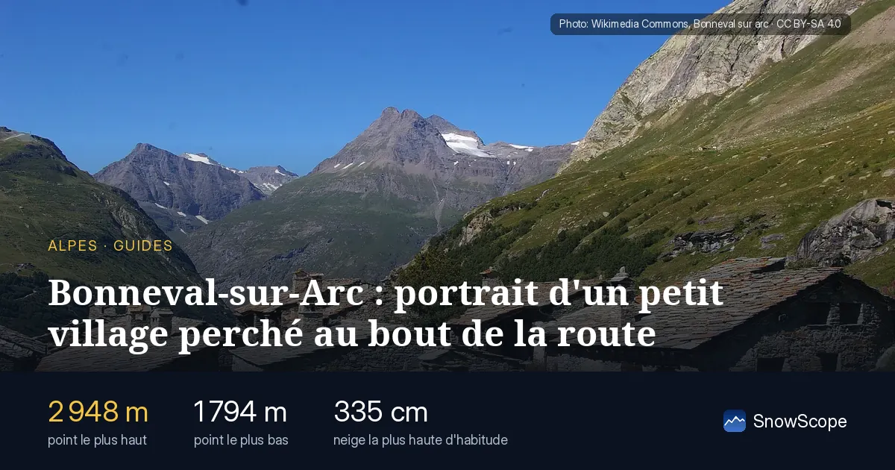

Bonneval-sur-Arc : portrait d'un petit village perché au bout de la route
Bonneval-sur-Arc est entourée par les hauts Alpes et coupée du monde en hiver. Le Col de l'Iseran, le plus haut col carrossable des Alpes à 2 764 m, ferme aux voitures de novembre à juin, laissant un petit village d'environ 285 habitants avec sa propre station de ski tranquille. Cet isolement est voulu : très haute altitude, neige régulière, et peu de foule.
Consultez les prévisions neige en temps réel pour Bonneval-sur-Arc sur l'application SnowScopeHauteurs de neige, alertes poudreuse et carte 3D, gratuitement.
Un village en montagne
Bonneval se situe en Haute-Maurienne, à la frontière italienne et en partie dans le Parc national de la Vanoise. Le village est classé parmi les Plus Beaux Villages de France, avec ses toits en pierre traditionnels et ses ruelles étroites. Le terrain qui l'entoure s'élève de 1 759 m à 3 642 m, ce qui vous dit tout de suite que les hivers ici sont froids et longs.
En hiver, la vallée de l'Arc s'arrête à Bonneval. On n'y accède que par la Maurienne. Cet isolement est réel : avant de partir, vérifiez les conditions de route dans la vallée et confirmez que les remontées fonctionnent sur le site officiel.

Petite station, grande altitude
La station est modeste en taille : environ 10 remontées et 20 km de pistes, qui montent de 1 794 m à 2 948 m. Ce n'est pas grand selon les standards de Savoie, mais l'altitude est tout ici. Le dénivelé est de 1 154 m, et vous pouvez découvrir toute la station en une matinée. Pour les familles avec jeunes enfants et les débutants qui cherchent des pentes tranquilles, c'est un avantage.
Les skieurs confirmés qui veulent plus que les pistes balisées doivent partir avec un guide. Le ski hors-piste demande de consulter le bulletin d'avalanche de Météo-France chaque matin. Lisez-le avant de quitter les pistes.
Épaisseur de neige selon la saison
L'altitude donne à Bonneval plus de neige que sa taille ne le suggère. En bas, à 1 794 m, l'épaisseur maximale habituelle sur 46 hivers passés est d'environ 99 cm, comparable à ce que beaucoup de plus grandes stations ne voient qu'en moyenne montagne. C'est suffisant pour skier, mais c'est mince en début de saison et peut laisser apparaître des rochers.
En moyenne montagne, à 2 371 m, le schéma est plus clair. Les épaisseurs de neige typiques sont de 26 cm en novembre, 66 cm en décembre, 103 cm en janvier, 128 cm en février et 134 cm en mars. Le maximum habituel ici est d'environ 172 cm. À cette altitude, il y a au moins 50 cm de neige au sol pendant 15 semaines dans 9 hivers sur 10.
Les pentes supérieures restent profondes jusqu'au printemps
Près du sommet, à 2 948 m, la saison est beaucoup plus longue et la neige plus profonde. Le maximum habituel est d'environ 335 cm, plus de trois fois celui de la base. Ici, le mois le plus enneigé est avril, avec environ 272 cm typiques. La première neige atteint cette altitude autour du 30 septembre, et les derniers névés fondent autour du 19 juin.
Cette différence d'altitude explique pourquoi Bonneval reste ouverte tard au printemps. Même en mai, le haut affiche généralement environ 214 cm. Les pentes supérieures sont où la saison s'étire le plus longtemps.
Quand venir
Pour la neige la plus fiable en bas de la station, février est le meilleur mois. La meilleure semaine de la saison à 1 794 m a au moins 50 cm dans 85 pour cent des hivers. La neige atteint son pic en février et mars à cet endroit. En novembre, la base peut être mince ; comptez environ 10 cm typiques. Attendez au moins décembre si vous voulez de bonnes conditions en bas.
Plus haut, la saison est longue et fiable. La première neige atteint 2 371 m autour du 7 octobre. Mi-novembre, 26 cm est typique là-haut. À partir de décembre, 50 cm ou plus sont habituels pendant 15 semaines dans 9 hivers sur 10.
Tendances au fil du temps
La neige ici a été stable. En bas, à 1 794 m, le maximum médian était d'environ 100 cm pendant les quinze premiers hivers enregistrés et environ 101 cm dans les quinze plus récents. En moyenne montagne, à 2 371 m, le pic a légèrement baissé d'environ 176 cm à environ 169 cm, mais le nombre total de jours avec neige au sol a diminué plus fortement, d'environ 256 à 225. L'hiver dernier, 2025-26, a été proche de la normale avec un pic d'environ 167 cm à cette altitude.
Conseils aux skieurs
- Accédez à Bonneval par la vallée de la Maurienne uniquement ; la route de l'Iseran est fermée en hiver. Vérifiez les conditions de route dans la vallée avant de partir.
- Pour les familles et les débutants, février et mars offrent la neige la plus fiable en bas et en moyenne montagne.
- La neige mince en novembre signifie que des rochers peuvent être visibles en bas de la station. Attendez décembre si vous voulez du revêtement.
- Les skieurs hors-piste doivent partir avec un guide et consulter le bulletin d'avalanche de Météo-France chaque matin.
- Avant de partir, vérifiez le site officiel pour confirmer quelles remontées sont ouvertes.
À propos de ces chiffres
Les hauteurs de neige des stations sont la neige la plus épaisse sur le haut du domaine à la date indiquée ; ce sont des estimations pour une zone, pas une mesure en un point. Les prévisions peuvent changer. Consultez toujours le bulletin d'avalanche officiel avant le hors-piste.
Bulletins d'avalanche officiels: Météo-France BERA
Citer ce bulletin
Pour la recherche, l'enseignement ou la presse : chiffres et graphiques réutilisables librement sous CC BY 4.0 avec cette citation.
SnowScope (2026), Bonneval-sur-Arc : portrait d'un petit village perché au bout de la route, https://snowscope.app/blog/fr/2026/11/bonneval-sur-arc-portrait-small-high-village-snow.html, consulté le 2026-11-09
SnowScope (Atlas Labs). (2026, November 9). Bonneval-sur-Arc : portrait d'un petit village perché au bout de la route. SnowScope snow reports. https://snowscope.app/blog/fr/2026/11/bonneval-sur-arc-portrait-small-high-village-snow.html
BibTeX
@misc{snowscope2026bonnevalsurarcportraitsm,
author = {{SnowScope (Atlas Labs)}},
title = {Bonneval-sur-Arc : portrait d'un petit village perché au bout de la route},
year = {2026},
month = nov,
howpublished = {\url{https://snowscope.app/blog/fr/2026/11/bonneval-sur-arc-portrait-small-high-village-snow.html}},
note = {Published 2026-11-09 11:38 UTC; accessed 2026-11-09}
}· CC BY 4.0 · Méthodes, données et outils →
Bonneval-sur-Arc : neige et température selon l'altitude, cet hiver vs l'hiver dernier (outils) →
Suivre Bonneval-sur-Arc
Gratuit : un message quand la neige arrive, et la météo chaque matin.
Autres bulletins neige

Bonneval-sur-Arc affiche 52 cm en altitude le 8 novembre. Les semaines 10-11 correspondent à la pointe de la saison neigeuse. Découvrez ce qu'il faut emporter selon les prévisions.

La neige au 3 novembre 2026 : Kendall Mountain 53 in (134 cm) après une tempête, Big White 91 cm, les Alpes jusqu'à 55 cm à Bonneval-sur-Arc.